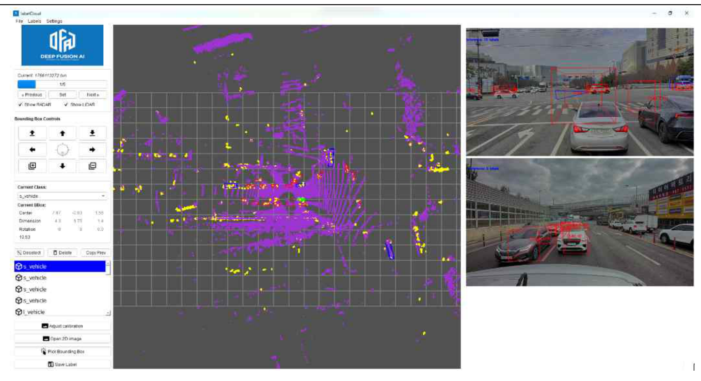
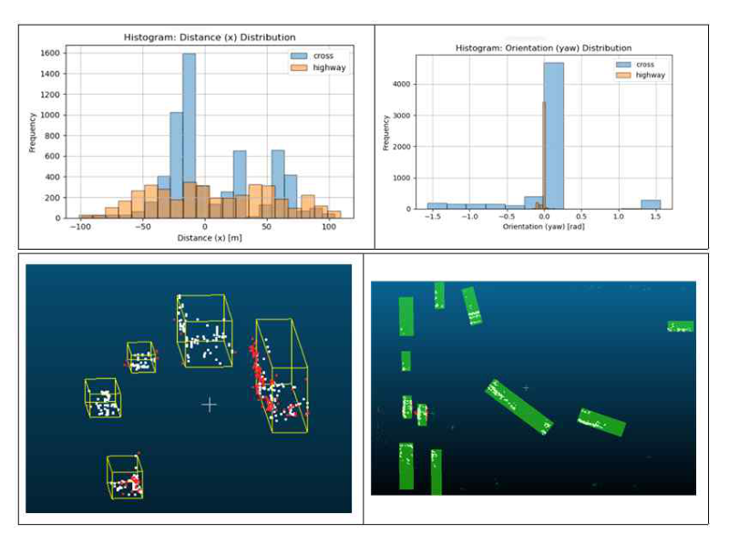
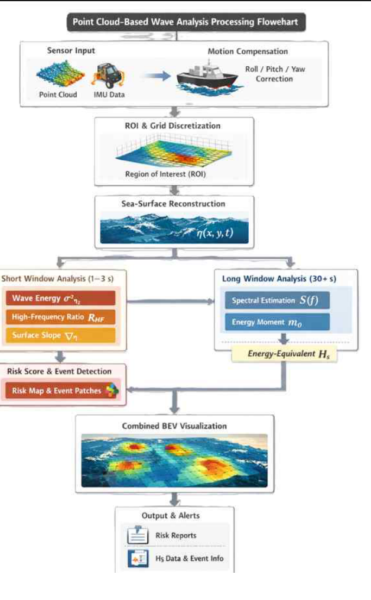
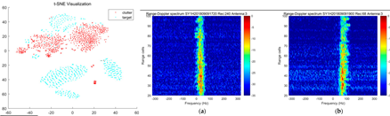

Seven Pillars of
Perception.
인지 기술의 일곱 기둥.
DeepFusion AI의 7가지 핵심 기술 기둥은 자율 기동 장비가 눈, 비, 어둠 속에서도 한계 없는 인지를 유지하게 하는 근간입니다.
우리의 인지 철학
단일 센서로는 어떠한 자율주행 기술도 완전할 수 없습니다. 카메라는 악천후와 역광에 취약하고, 라이다는 기후 조건에 민감합니다.
DeepFusion AI는 투과성이 높은 전파 계열의 4D 이미징 레이다를 주(主) 센서로 삼아, 인공지능 딥러닝을 융합하여 센서가 수집한 미세 반사 정보까지 완벽히 분석해 냅니다. 이를 통해 어떠한 환경 조건에서도 붕괴되지 않는 인지 엔진을 만듭니다.
Perceptive Sensor Fusion Engine
Camera, LiDAR, and 4D Imaging Radar Early Fusion
RAPA-RLC Platform
RAPA-RLC는 4D 이미징 레이다의 원시 반사 데이터(Point Cloud)에 딥러닝 가중치를 입혀 사물의 종류, 형상, 거리, 속도를 실시간으로 분류하는 DFAI 독점 플랫폼입니다.
- 신호 감쇄 및 노이즈 제거 특허 필터 탑재
- 초당 20프레임 이상의 고속 추론 성능
- 기존 저해상도 레이다 대비 60% 이상 향상된 객체 정밀 검출
- 악천후·먼지 환경 강인성 현장 테스트 통과


Early-Fusion Engine
센서 신호를 융합할 때 판단 직전에 합치는 기존의 Late Fusion 방식은 정보 누락이 발생합니다. DFAI는 센서 원시 레벨에서 정보를 결합하는 Early Fusion 기반 멀티모달 AI를 활용합니다.
- 카메라 픽셀 데이터와 레이다 전파 데이터의 좌표계 실시간 얼라인먼트
- 동적 가중치 네트워크를 활용하여 신뢰도 낮은 센서 정보 자동 스케일 다운
- 라이다 포인트 클라우드 호환 인터페이스 제공
Real-time 3D Mapping
레이다로 측정한 환경 구조와 장애물들을 3D 클라우드 맵으로 시각화하여 제어 관제실 및 모바일 앱으로 실시간 송출합니다.
- Web-GL 기반 저지연 렌더링 프레임워크
- 관제실 화면 내 장애물 충돌 위험 구간 시각 경고 기능
- 360도 자유 시점 모드 지원




Edge Compute Module
차량이나 소형 함정에 최적화된 저전력 엣지 컴퓨팅 하드웨어를 직접 패키징하여 배포합니다. 고성능 GPU 서버 없이도 차량 내부 단독 추론이 가능합니다.
- 최소 전력 소비 (25W 이하) 구동
- IP67 등급 방수/방진 케이스 패키징 완비 (해상 및 군사용 실증 규격 부합)
- 실시간 차량 CAN 통신 연동 버스 내장
Virtual Data & Federations
데이터가 절대적으로 부족한 야간 파도 환경이나 군사 비공개 구역의 주행 모사를 위해, 가상 레이다 신호 합성 기술과 보안 연합 학습(Federated Learning) 구조를 적용했습니다.
- 실사 수준의 가상 전파 난반사 신호 시뮬레이션 합성
- 서버 간 데이터 원본 반출 없이 AI 모델만 업데이트하는 분산 연합 학습
- 약 60만 건 이상의 가상 레이다 데이터셋 구축 완료


Full-Range Object Tracker
레이다 반사 포인트들의 군집(Cluster) 분석을 통해 소형 장애물(해상 수영하는 인간, 지상 소형 장애물)의 정밀 좌표를 뽑아내고 추적선을 도출합니다.
- 3D 바운딩 박스를 활용한 실시간 차원 검출
- 클러터(잡음 반사파) 제거 후 사물 중심 좌표 계산
- 카메라 매칭 2D 검출기 상호 보정
Patent-Proven Algorithms
CES 2026 Vehicle Tech 부문 혁신상 수상의 원동력인 핵심 특허 기술들입니다. 전파 전송 위상 차이 보정 및 빔포밍 연산 가속 알고리즘이 적용되었습니다.
- 실시간 위상 정합 특허 기술 확보
- 연산 속도를 3배 이상 올린 특화 빔포밍 최적화 기술
- 전파 흡수/왜곡이 잦은 환경에서의 데이터 복원율 95% 이상 보증

기술 신뢰성 인증 현황
방산 적합성 실증
육군 지상 작전 차량 탑재 주행 실증 실적 보유
해상 전천후 실증
해안선 및 도서 지역 해무·강우 조건 하 파도 탐지 1,000시간 누적
특허 지식 재산
레이다 신호 필터링 및 딥러닝 융합 특허 출원 3건 완료
미래의 인지 기술,
함께 만들어가시겠습니까?
DFAI는 방산·해양·자동차 분야의 파트너와 새로운 자율 시스템을 만들어가고 있습니다.